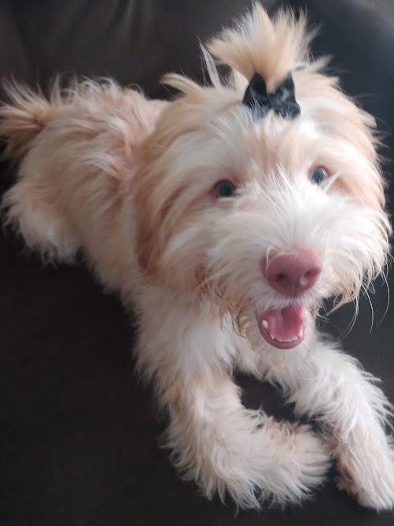
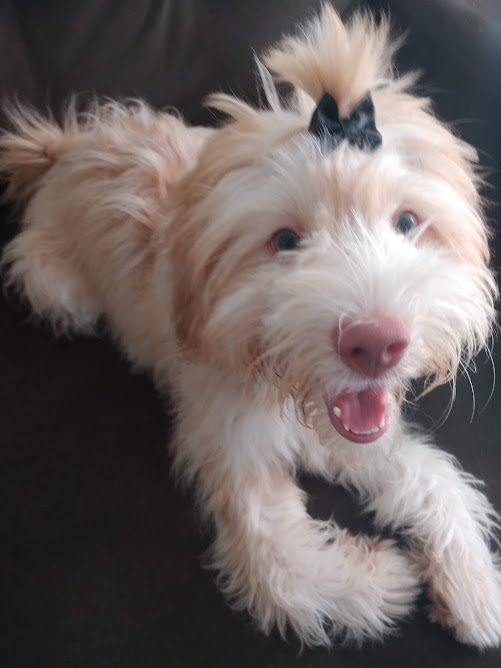

Felipe é o meu marido. Felipe é o meu marido. Felipe é o meu marido. Felipe é o meu marido. Felipe é o meu marido. Felipe é o meu marido. Felipe é o meu marido. Felipe é o meu marido. Felipe é o meu marido. Felipe é o meu marido. Felipe é o meu marido. Felipe é o meu marido. Felipe é o meu marido. Felipe é o meu marido. Felipe é o meu marido. Felipe é o meu marido. Felipe é o meu marido. Felipe é o meu marido.
Manu é a minha irmã mais nova. Manu é a minha irmã mais nova. Manu é a minha irmã mais nova. Manu é a minha irmã mais nova. Manu é a minha irmã mais nova. Manu é a minha irmã mais nova. Manu é a minha irmã mais nova. Manu é a minha irmã mais nova. Manu é a minha irmã mais nova. Manu é a minha irmã mais nova. Manu é a minha irmã mais nova. Manu é a minha irmã mais nova. Manu é a minha irmã mais nova. Manu é a minha irmã mais nova. Manu é a minha irmã mais nova. Manu é a minha irmã mais nova. Manu é a minha irmã mais nova. Manu é a minha irmã mais nova. Manu é a minha irmã mais nova. Manu é a minha irmã mais nova. Manu é a minha irmã mais nova. Manu é a minha irmã mais nova. Manu é a minha irmã mais nova. Manu é a minha irmã mais nova.
Mia é minha cachorrinha e filha do coração. Mia é minha cachorrinha e filha do coração. Mia é minha cachorrinha e filha do coração. Mia é minha cachorrinha e filha do coração. Mia é minha cachorrinha e filha do coração. Mia é minha cachorrinha e filha do coração. Mia é minha cachorrinha e filha do coração. Mia é minha cachorrinha e filha do coração. Mia é minha cachorrinha e filha do coração. Mia é minha cachorrinha e filha do coração. Mia é minha cachorrinha e filha do coração. Mia é minha cachorrinha e filha do coração. Mia é minha cachorrinha e filha do coração. Mia é minha cachorrinha e filha do coração. Mia é minha cachorrinha e filha do coração. Mia é minha cachorrinha e filha do coração. Mia é minha cachorrinha e filha do coração. Mia é minha cachorrinha e filha do coração.
Lúcia é a minha mãezona! Lúcia é a minha mãezona! Lúcia é a minha mãezona! Lúcia é a minha mãezona! Lúcia é a minha mãezona! Lúcia é a minha mãezona! Lúcia é a minha mãezona! Lúcia é a minha mãezona! Lúcia é a minha mãezona! Lúcia é a minha mãezona! Lúcia é a minha mãezona! Lúcia é a minha mãezona! Lúcia é a minha mãezona! Lúcia é a minha mãezona! Lúcia é a minha mãezona! Lúcia é a minha mãezona! Lúcia é a minha mãezona! Lúcia é a minha mãezona! Lúcia é a minha mãezona! Lúcia é a minha mãezona! Lúcia é a minha mãezona!
Marcos é o meu pai. Marcos é o meu pai. Marcos é o meu pai. Marcos é o meu pai. Marcos é o meu pai. Marcos é o meu pai. Marcos é o meu pai. Marcos é o meu pai. Marcos é o meu pai. Marcos é o meu pai. Marcos é o meu pai. Marcos é o meu pai. Marcos é o meu pai. Marcos é o meu pai. Marcos é o meu pai. Marcos é o meu pai. Marcos é o meu pai. Marcos é o meu pai. Marcos é o meu pai. Marcos é o meu pai. Marcos é o meu pai. Marcos é o meu pai. Marcos é o meu pai. Marcos é o meu pai. Marcos é o meu pai. Marcos é o meu pai. Marcos é o meu pai. Marcos é o meu pai. Marcos é o meu pai. Marcos é o meu pai. Marcos é o meu pai. Marcos é o meu pai. Marcos é o meu pai. Marcos é o meu pai. Marcos é o meu pai. Marcos é o meu pai.
Mylenna é minha irmã do meio. Mylenna é minha irmã do meio. Mylenna é minha irmã do meio. Mylenna é minha irmã do meio. Mylenna é minha irmã do meio. Mylenna é minha irmã do meio. Mylenna é minha irmã do meio. Mylenna é minha irmã do meio. Mylenna é minha irmã do meio. Mylenna é minha irmã do meio. Mylenna é minha irmã do meio. Mylenna é minha irmã do meio. Mylenna é minha irmã do meio. Mylenna é minha irmã do meio. Mylenna é minha irmã do meio. Mylenna é minha irmã do meio. Mylenna é minha irmã do meio. Mylenna é minha irmã do meio. Mylenna é minha irmã do meio. Mylenna é minha irmã do meio. Mylenna é minha irmã do meio. Mylenna é minha irmã do meio. Mylenna é minha irmã do meio. Mylenna é minha irmã do meio. Mylenna é minha irmã do meio. Mylenna é minha irmã do meio. Mylenna é minha irmã do meio. Mylenna é minha irmã do meio. Mylenna é minha irmã do meio. Mylenna é minha irmã do meio. Mylenna é minha irmã do meio. Mylenna é minha irmã do meio. Mylenna é minha irmã do meio. Mylenna é minha irmã do meio. Mylenna é minha irmã do meio. Mylenna é minha irmã do meio.
Wesley é meu cunhado. Wesley é meu cunhado. Wesley é meu cunhado. Wesley é meu cunhado. Wesley é meu cunhado. Wesley é meu cunhado. Wesley é meu cunhado. Wesley é meu cunhado. Wesley é meu cunhado. Wesley é meu cunhado. Wesley é meu cunhado. Wesley é meu cunhado. Wesley é meu cunhado. Wesley é meu cunhado. Wesley é meu cunhado. Wesley é meu cunhado. Wesley é meu cunhado. Wesley é meu cunhado. Wesley é meu cunhado. Wesley é meu cunhado. Wesley é meu cunhado. Wesley é meu cunhado. Wesley é meu cunhado. Wesley é meu cunhado.
Tomás é meu irmão. Tomás é meu irmão. Tomás é meu irmão. Tomás é meu irmão. Tomás é meu irmão. Tomás é meu irmão. Tomás é meu irmão. Tomás é meu irmão. Tomás é meu irmão. Tomás é meu irmão. Tomás é meu irmão. Tomás é meu irmão. Tomás é meu irmão. Tomás é meu irmão. Tomás é meu irmão. Tomás é meu irmão. Tomás é meu irmão. Tomás é meu irmão. Tomás é meu irmão. Tomás é meu irmão. Tomás é meu irmão. Tomás é meu irmão. Tomás é meu irmão. Tomás é meu irmão. Tomás é meu irmão. Tomás é meu irmão. Tomás é meu irmão. Tomás é meu irmão. Tomás é meu irmão. Tomás é meu irmão. Tomás é meu irmão. Tomás é meu irmão. Tomás é meu irmão. Tomás é meu irmão. Tomás é meu irmão. Tomás é meu irmão. Tomás é meu irmão. Tomás é meu irmão. Tomás é meu irmão. Tomás é meu irmão. Tomás é meu irmão. Tomás é meu irmão. Tomás é meu irmão. Tomás é meu irmão. Tomás é meu irmão. Tomás é meu irmão. Tomás é meu irmão. Tomás é meu irmão. Tomás é meu irmão. Tomás é meu irmão.
Jade é uma dos pets. Jade é uma dos pets. Jade é uma dos pets. Jade é uma dos pets. Jade é uma dos pets. Jade é uma dos pets. Jade é uma dos pets. Jade é uma dos pets. Jade é uma dos pets. Jade é uma dos pets. Jade é uma dos pets. Jade é uma dos pets. Jade é uma dos pets. Jade é uma dos pets. Jade é uma dos pets. Jade é uma dos pets. Jade é uma dos pets. Jade é uma dos pets. Jade é uma dos pets. Jade é uma dos pets. Jade é uma dos pets. Jade é uma dos pets. Jade é uma dos pets. Jade é uma dos pets. Jade é uma dos pets. Jade é uma dos pets. Jade é uma dos pets. Jade é uma dos pets. Jade é uma dos pets. Jade é uma dos pets. Jade é uma dos pets. Jade é uma dos pets. Jade é uma dos pets. Jade é uma dos pets. Jade é uma dos pets. Jade é uma dos pets. Jade é uma dos pets. Jade é uma dos pets. Jade é uma dos pets. Jade é uma dos pets.
Pepito é o pet hominho da casa. Pepito é o pet hominho da casa. Pepito é o pet hominho da casa. Pepito é o pet hominho da casa. Pepito é o pet hominho da casa. Pepito é o pet hominho da casa. Pepito é o pet hominho da casa. Pepito é o pet hominho da casa. Pepito é o pet hominho da casa. Pepito é o pet hominho da casa. Pepito é o pet hominho da casa. Pepito é o pet hominho da casa. Pepito é o pet hominho da casa. Pepito é o pet hominho da casa. Pepito é o pet hominho da casa. Pepito é o pet hominho da casa. Pepito é o pet hominho da casa. Pepito é o pet hominho da casa. Pepito é o pet hominho da casa. Pepito é o pet hominho da casa. Pepito é o pet hominho da casa. Pepito é o pet hominho da casa. Pepito é o pet hominho da casa. Pepito é o pet hominho da casa. Pepito é o pet hominho da casa. Pepito é o pet hominho da casa. Pepito é o pet hominho da casa. Pepito é o pet hominho da casa. Pepito é o pet hominho da casa. Pepito é o pet hominho da casa. Pepito é o pet hominho da casa. Pepito é o pet hominho da casa. Pepito é o pet hominho da casa. Pepito é o pet hominho da casa. Pepito é o pet hominho da casa. Pepito é o pet hominho da casa. Pepito é o pet hominho da casa. Pepito é o pet hominho da casa. Pepito é o pet hominho da casa.
Google